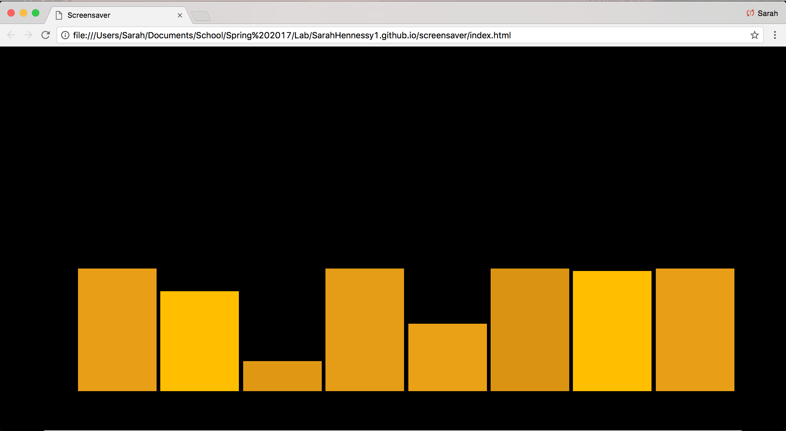
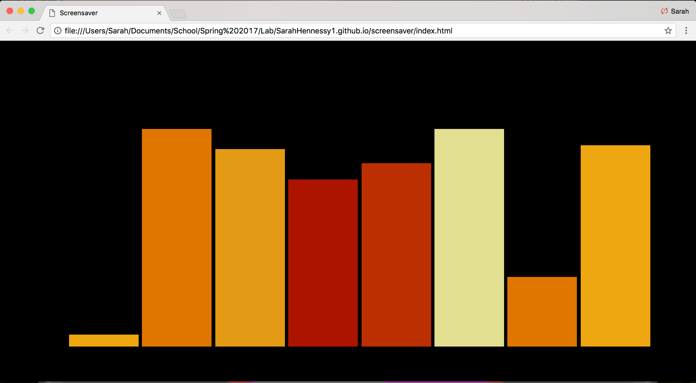
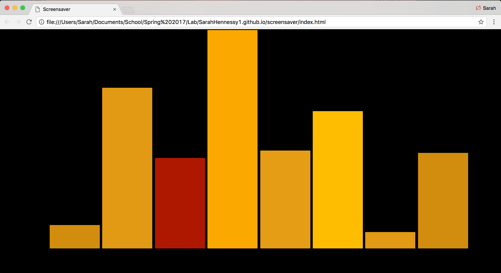
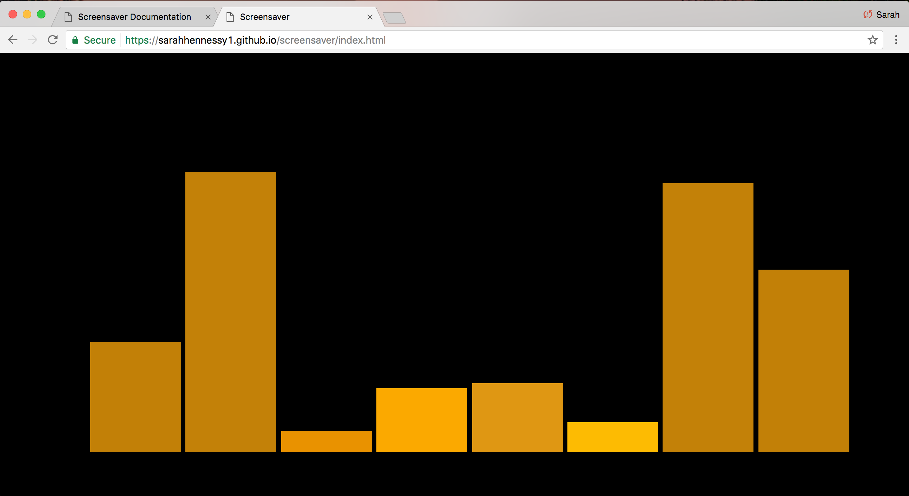

For my project I took visual inspiration from a fireplace. Growing up my house had a wood burning fireplace that was used for a good 60% of the year due to the long and cold seasons in upstate New York. I always found the flickers of the flames, the changing heights and colors very peaceful. The randomization and slow growth of the flames kept my interest and made for peaceful background.

To start my project I created 8 bars that change to random heights as if mimicking the changing flickering heights of a flame. These height changing bars also are animated with keyframes to continually change the color of the bars to continue the idea that the objects are flickering.

Initially the heights change based on a SetTimeout that allows the speed at which the heights update to continually get faster. This again mimics the style of a fireplace the at first grows slowly but begins to flicker and change very quickly as the fire grows.

The overall height of the piece also changes similar to a real fire. Initially the piece starts out with a max-height of 20% that keeps the flames small and as time continues the pieces mash-height changes to 40% and then 100%.

The fire again will cycle through this process of changing colors, heights and overall max height.